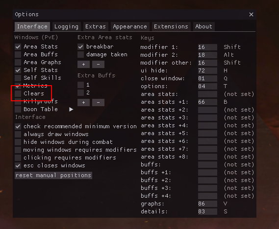
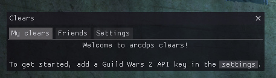
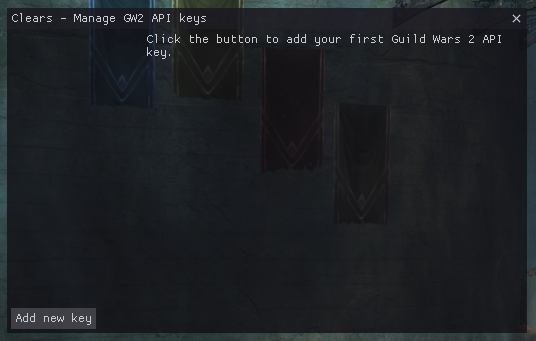
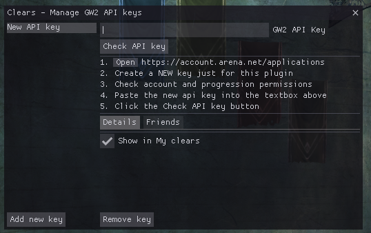
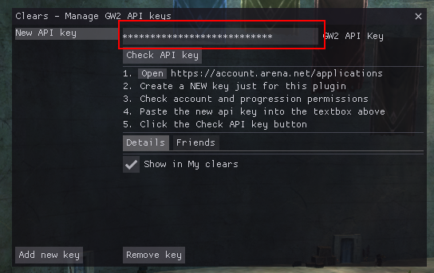
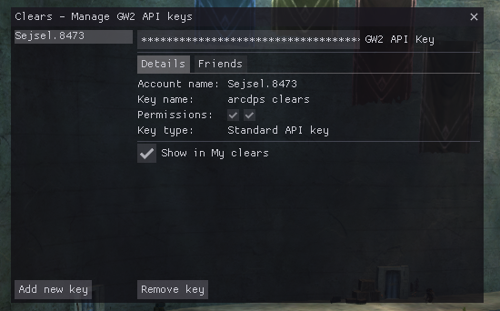

Adding an API key
Opening the Clears window
To get started, open the Clears window. Open the arcdps settings (Shift+Alt+T
by default) and click the checkbox to open the Clears window.
Alternatively, you can use the keybind to open the window (Shift+Alt+C by default).

The Clears window

The clears window should now appear and prompt you to add an API key. To continue, click the settings button to open the API key settings.
You can also access the API key settings by going to the Settings tab and
clicking the Manage GW2 API keys button.
The API key management window
The API key management window will look like this when there are no API keys added yet:

To continue, click the Add new key button.

Adding the API key
- Copy your new key into your clipboard by using the copy icon:

- Paste the key into the
GW2 API Keytextbox:

- Click the
Check API keybutton.
If everything went right, the window should now list your account name:

If there were any issues, the window will tell you what went wrong.
Adding more keys
If you have multiple accounts, you can add multiple keys here. If you want to see clears of your friends, check out Friends instead.
Next step
Now that your API key is added, you may check your clears.